Programmering nivå 1 med Python
Kapitel 1: Vad är programmering
Detta kapitel introducerar programmeringens grunder, hur datorn kör kod, samt hur du kommer igång med Python och VS Code.
Innehållsförteckning
Klicka på ett avsnitt för att hoppa direkt.
- 1.1 Vad är ett program
- 1.2 Vad är programmering
- 1.3 Datorns funktionssätt och programmeringens möjligheter
- 1.4 Programspråk
- 1.5 Hur ett program körs
- 1.6 Kompilerade och interpreterade programspråk
- 1.7 Installera Python på macOS
- 1.8 Skriva och köra program i IDLE
- 1.9 Installera Visual Studio Code
- 1.10 Programmera i VS Code med Python
- 1.11 Syntax och noggrannhet i kod
- 1.12 Text, radbrytningar och specialtecken i Python
- 1.13 Programmering i vardagen
- 1.14 Att tänka som en programmerare
- 1.15 Övningar
- 1.16 Reflektionsfrågor
1.1 Vad är ett program
Ett program är en serie instruktioner som en dator följer steg för steg. Datorn gör exakt det som står i koden.
Program finns överallt, till exempel i mobilappar, spel, bankappar, webbplatser, bilar, trafiksystem och medicinsk utrustning.
1.2 Vad är programmering
Programmering är processen att skapa program. Arbetet innehåller att analysera problem, planera lösning, skriva kod, testa och förbättra.
- Analysera ett problem
- Planera en lösning
- Skriva kod
- Testa programmet
- Förbättra programmet
1.3 Datorns funktionssätt och programmeringens möjligheter
Datorn tänker inte själv, den följer instruktioner exakt. Det ger stora möjligheter men också tydliga begränsningar.
Datorn följer instruktioner
tal1 = 5
tal2 = 3
summa = tal1 + tal2
print(summa)Möjligheter
- Räkna ut resultat snabbt
- Hantera stora mängder information
- Styra tekniska system
- Automatisera uppgifter
Begränsningar
Datorn förstår inte vad du menar, bara vad du skriver. Därför måste kod vara tydlig, korrekt och testad.
1.4 Programspråk
För att skriva program använder man programspråk. I kursen används Python eftersom det är lättläst och tydligt för nybörjare.
- Python
- Java
- C#
- JavaScript
- C++
Varför Python
Python används inom webbutveckling, dataanalys, AI, automatisering och forskning.
1.5 Hur ett program körs
När du kör ett program samverkar programkoden, Python-tolken, operativsystemet och hårdvaran.
- Du skriver kod i en fil
- Operativsystemet startar Python
- Python läser koden
- Instruktionerna körs steg för steg
- Resultatet visas för användaren
namn = input("Vad heter du? ")
print(f"Hej {namn}")1.6 Kompilerade och interpreterade programspråk
Datorn kan bara köra maskinkod. Därför måste programkod översättas.
| Kompilerade språk | Interpreterade språk |
|---|---|
| Hela programmet översätts först | Koden körs rad för rad |
| Exempel: C, C++, Rust, Go | Exempel: Python, JavaScript, Ruby |
Python är ett interpreterat språk.
1.7 Installera Python på macOS
För att kunna skriva och köra Pythonprogram behöver Python vara installerat på datorn. De flesta Mac-datorer har redan en version av Python installerad, men ofta är den äldre och används av operativsystemet. I denna kurs använder vi Python 3, därför installerar vi den senaste versionen.
Steg 1 - Ladda ner Python
- Öppna en webbläsare.
- Gå till python.org.
- Klicka på Downloads.
- Klicka på knappen Download Python 3.x.x.
Python uppdateras hela tiden, så versionen kan vara senare än i boken.
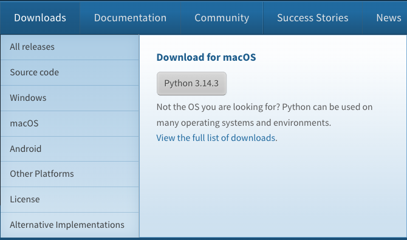
Steg 2 - Installera Python
- Öppna filen som laddades ner.
- Starta installationsprogrammet.
- Klicka på Continue i varje steg.
- Slutför installationen.
När installationen är klar finns Python installerat på datorn. Samtidigt installeras även IDLE, som är en enkel miljö för att skriva och köra Pythonkod.
Steg 3 - Kontrollera installationen
Det är bra att kontrollera att Python fungerar.
- Öppna programmet Terminal.
- Skriv kommandot nedan.
- Tryck Enter.
python3 --version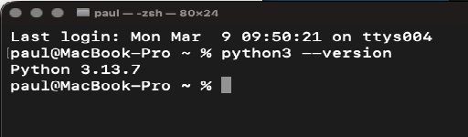
Om installationen fungerar visas ett meddelande som liknar Python 3.14.3. Det kan vara en senare version när du installerar.
Hitta Python på din Mac
När Python installeras skapas flera filer på datorn. Ibland kan det vara bra att veta var Python finns installerat. Det enklaste sättet är att använda Finder.
- Öppna Finder.
- Gå till mappen Applications (Program).
- Leta efter mappen Python 3.x (eller senare version).
I denna mapp finns bland annat:
- IDLE
- Python Launcher
- Install Certificates.command
- dokumentation för Python
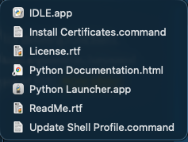
Om du installerat Python från python.org finns programmen vanligtvis i mappen Applications -> Python 3.x.
Du kan också hitta Python via Spotlight: tryck Cmd + mellanslag, skriv Python eller IDLE och starta programmet därifrån.
Vanliga problem
Om Terminalen visar ett felmeddelande kan det bero på att Python inte installerades korrekt. Försök i så fall installera om från python.org.
Nästa steg
Nu när Python är installerat ska vi lära oss att skriva och köra Pythonprogram i programmet IDLE. Det gör vi i nästa avsnitt.
1.8 Skriva och köra program i IDLE
När Python installeras följer programmet IDLE med. IDLE är en enkel utvecklingsmiljö där du kan skriva och köra Pythonkod. Den är särskilt bra när man börjar lära sig programmering.
I detta avsnitt lär du dig:
- hur du startar IDLE
- hur du skriver ett Pythonprogram
- hur du sparar programmet
- hur du kör programmet
Starta IDLE
För att starta IDLE på macOS gör du så här:
- Öppna Spotlight genom att trycka Cmd + mellanslag.
- Skriv IDLE.
- Starta programmet IDLE (Python 3).
När IDLE startar öppnas ett fönster som kallas Python Shell.
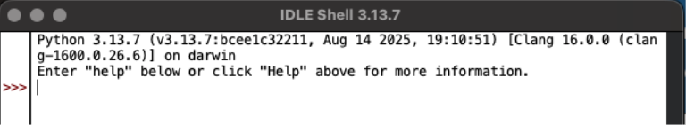
Python Shell
Python Shell fungerar ungefär som en räknare för Python. Du skriver en instruktion och Python kör den direkt.
Prova att skriva:
print("Hej")Tryck sedan Enter. Python skriver då ut Hej. Detta visar att Python fungerar.
Skapa ett Pythonprogram
Även om man kan skriva kod direkt i Python Shell är det vanligaste att man skriver program i en fil.
- Klicka på File i menyn.
- Välj New File.
Ett nytt fönster öppnas. Detta fönster används för att skriva programkod.
Skriv ditt program
Skriv följande kod i det nya fönstret:
print("Hej världen")Detta är ett mycket enkelt Pythonprogram som skriver ut en text på skärmen.
Spara programmet
Innan programmet kan köras måste det sparas.
- Klicka på File.
- Välj Save.
- Ge filen ett namn, till exempel
hej.py.
Skapa gärna en tydlig mappstruktur under Dokument på din Mac, till exempel en mapp för kursen Programmering 1 och en undermapp för kapitel 1.
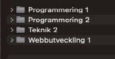
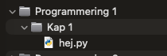
Pythonprogram sparas alltid med filändelsen .py.
Kör programmet
När programmet är sparat kan det köras:
- Klicka på Run i menyn.
- Välj Run Module.
Du kan också använda kortkommandot F5. På Mac kan du behöva hålla ned fn-tangenten för att F5 ska fungera.
Programmet körs då och resultatet visas i Python Shell. Du ska nu se texten Hej världen.
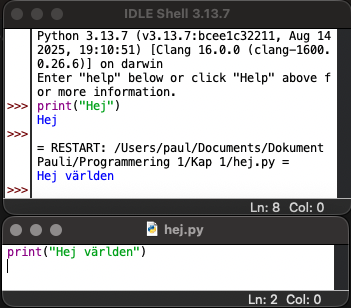
Ändra programmet
Prova att ändra texten i programmet:
print("Jag lär mig Python")Spara programmet igen och kör det en gång till.
Sammanfattning
I detta avsnitt har du lärt dig att:
- starta IDLE
- skriva Pythonkod
- spara ett program
- köra ett program
I nästa avsnitt ska vi fortsätta med programmering i Visual Studio Code.
1.9 Installera Visual Studio Code
Visual Studio Code (VS Code) är ett program där man kan skriva och köra kod. Det används av många programmerare eftersom det är snabbt, enkelt att använda och fungerar med många olika programspråk.
Om du redan har VS Code installerat på din dator behöver du inte installera det igen. Du kan då gå vidare till nästa avsnitt.
Installera VS Code
- Öppna en webbläsare.
- Gå till code.visualstudio.com.
- Klicka på Download for macOS.
- När filen laddats ner, öppna den.
- Dra Visual Studio Code till mappen Applications (Program).
Starta sedan programmet från Applications eller genom Spotlight (Cmd + mellanslag och skriv VS Code).
1.10 Programmera i VS Code med Python
För att kunna skriva Pythonkod i VS Code behöver man installera ett Python-tillägg.
Installera Python-tillägget
- Starta VS Code.
- Klicka på Extensions i vänstermenyn (ikonen med fyra rutor).
- Skriv Python i sökfältet.
- Installera tillägget Python från Microsoft.
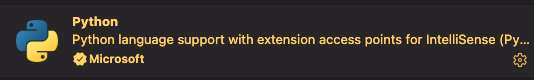
När tillägget är installerat kan VS Code arbeta med Pythonprogram.
Välj Python-version
VS Code behöver veta vilken Python-installation som ska användas.
- Tryck Cmd + Shift + P.
- Skriv Python: Select Interpreter.
- Välj den Python-version som installerades tidigare, till exempel Python 3.14.3.
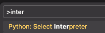
Dra mappen Kap 1 från Finder in i VS Code-fönstret.
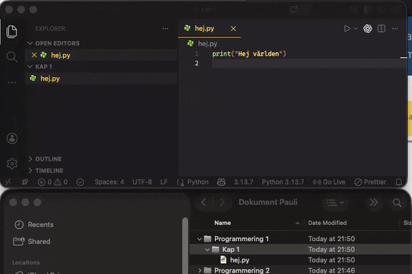
Kör programmet
Det finns flera sätt att köra programmet. Det enklaste är att klicka på Run-knappen uppe till höger i VS Code.
Programmet körs då i terminalen och resultatet visas längst ner i fönstret. Du ska då se Hej världen.
Nu kan du skriva och köra Pythonprogram direkt i VS Code.
Använda extensions
I boken rekommenderas tillägget indent-rainbow. Det gör indragen med tab tydliga.
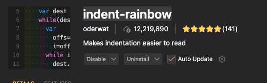
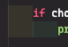
1.11 Syntax och noggrannhet i kod
När man programmerar är det viktigt att skriva koden precis rätt. Datorn kan inte tolka vad vi menar om koden är felaktig. Den följer bara de instruktioner som står i programmet.
Därför måste programmerare vara noggranna när de skriver kod.
Vad är syntax
Syntax är reglerna för hur kod ska skrivas i ett programspråk. Varje programspråk har sina egna regler. Om syntaxen är fel kan programmet inte köras.
Till exempel är detta korrekt Pythonkod:
print("Hej världen")Om man glömmer citattecken blir det fel:
print(Hej världen)Python förstår då inte vad texten betyder och visar ett felmeddelande.
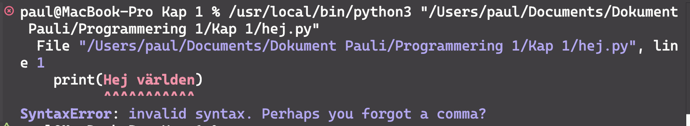
Indrag i Python
I många programspråk används klamrar för att visa vilka instruktioner som hör ihop. I Python används istället indrag.
Till exempel:
if True:
print("Detta skrivs ut")Här rekommenderar jag att du gör indrag med tabtangenten. I Python är standard fyra mellanslag, och i VS Code omvandlas Tab normalt automatiskt till fyra mellanslag. Därför blir indraget korrekt även om du trycker på Tab.
Vill du kontrollera detta i VS Code kan du visa osynliga tecken:
- Öppna Settings via Code - Preferences - Settings (eller kortkommandot Cmd + ,).
- Sök efter Render Whitespace.
- Välj all för att visa alla blanktecken hela tiden.
Om indraget saknas eller är fel kan Python visa ett felmeddelande.
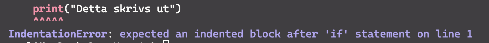
Vanliga misstag
Små misstag kan göra att programmet inte fungerar. Några vanliga exempel är:
- glömda citattecken
- felstavade kommandon
- saknade parenteser
- felaktiga indrag
Till exempel:
prin("Hej")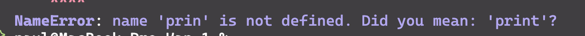
Felmeddelanden
När något är fel i koden visar Python ett felmeddelande. Felmeddelandet hjälper dig att hitta problemet. Det visar ofta:
- vilken rad som innehåller felet
- vilken typ av fel det är
Det är därför viktigt att läsa felmeddelanden noggrant.
Var noggrann när du skriver kod
När du programmerar är det viktigt att:
- skriva kommandon korrekt
- använda rätt citattecken och parenteser
- använda rätt indrag
- läsa felmeddelanden
Att vara noggrann gör det mycket lättare att hitta och lösa problem i program.
Sammanfattning
Syntax är reglerna för hur kod ska skrivas i ett programspråk. Om syntaxen är fel kan programmet inte köras. I Python är det särskilt viktigt att skriva kommandon korrekt, använda rätt parenteser/citattecken och ha rätt indrag.
1.12 Text, radbrytningar och specialtecken i Python
När man skriver text i Python använder man oftast print(). Det gör att texten visas i
terminalen.
print("Hej världen")Det som står mellan citattecknen skrivs ut exakt som text.
Vanliga specialtecken
I Python finns några tecken som används för att påverka formateringen av text. De kallas ofta escape-tecken eller specialtecken.
\n - ny rad
\n betyder att texten fortsätter på nästa rad.
Exempel:
print("Hej\nvärlden")Det skrivs ut så här:
Hej
världen\t - tab
\t betyder tabbtecken. Det används för att hoppa till nästa tabbstopp.
Exempel:
print("Namn\tÅlder")
print("Anna\t16")Det kan skrivas ut ungefär så här:
Namn Ålder
Anna 16Exakt justering kan se olika ut beroende på terminal, editor och typsnitt.
Det är användbart när man vill göra enkel uppradning av text.
\" - citattecken i text
Om du vill skriva ut citattecken inne i en textsträng kan du använda \".
Exempel:
print("Han sa: \"Hej!\"")Utskrift:
Han sa: "Hej!"\\ - backslash
Om du vill skriva ut ett vanligt omvänt snedstreck använder du \\.
Exempel:
print("C:\\Python\\MinaFiler")Utskrift:
C:\Python\MinaFilerExempel med flera specialtecken
print("Övning 1 - Skriv ut text")
print("Hej världen")
print("Hej\nigen")
print("Namn\tKlass")
print("Paul\tTE23")
print("Han sa: \"Python är kul\"")Viktigt att tänka på
Specialtecken fungerar bara inne i textsträngar, alltså mellan citattecken. Om du skriver fel kan programmet ge ett felmeddelande eller skriva ut något annat än du tänkt.
Sammanfattning
Några vanliga specialtecken i Python är:
\n= ny rad\t= tab\"= citattecken\\= backslash
De används för att styra hur text visas när programmet körs.
1.13 Programmering i vardagen
Programmering finns i många delar av samhället och i många av de saker vi använder varje dag. Många av de tjänster och appar som människor använder bygger på program som någon har skrivit.
Programmering används till exempel i
- mobilappar
- webbsidor
- datorspel
- banktjänster
- sociala medier
- navigationssystem
- smarta hem
När du använder en app på din telefon eller en tjänst på internet är det alltid ett program som ligger bakom.
Programmering i appar och webbtjänster
Många av de appar vi använder varje dag är byggda med hjälp av programmering. Till exempel behöver en app kunna
- visa information
- ta emot inmatning från användaren
- spara data
- kommunicera med servrar
Till exempel använder en väderapp program som hämtar data från vädertjänster och visar prognoser.
Programmering i spel
Datorspel är också ett tydligt exempel på programmering. I ett spel används programkod för att styra
- hur figurer rör sig
- hur poäng räknas
- hur spelvärlden fungerar
- hur spelaren kan interagera med spelet
Många elever möter programmering första gången genom spelutveckling.
Programmering i teknik och maskiner
Programmering används också i många tekniska system. Exempel är
- robotar i fabriker
- trafikljus
- bilar
- medicinsk utrustning
- flygplan
I dessa system används program för att styra hur maskiner ska bete sig.
Programmering och automatisering
Ett viktigt användningsområde för programmering är automatisering. Det innebär att datorer utför uppgifter automatiskt istället för att människor gör dem manuellt.
Exempel på automatisering är
- sortering av paket
- analys av data
- bokningssystem
- tradingbotar (program som automatiskt köper och säljer tillgångar)
- rekommendationer i streamingtjänster
Automatisering kan göra arbete snabbare och mer effektivt.
Programmering och samhället
Programmering påverkar också samhället på många sätt. Algoritmer används till exempel för att
- rekommendera filmer och musik
- visa annonser
- sortera information
- analysera stora datamängder
Detta kan ha både positiva och negativa effekter. Därför är det viktigt att förstå hur programmerade system fungerar.
Sammanfattning
Programmering används i många delar av vardagen. Den finns i appar, spel, webbtjänster och tekniska system.
Genom att lära sig programmering får man en bättre förståelse för hur många av de digitala system som används i samhället fungerar.
1.14 Att tänka som en programmerare
Att programmera handlar inte bara om att skriva kod. Det handlar också om att tänka på ett särskilt sätt när man löser problem. Programmerare måste kunna analysera problem, dela upp dem i mindre delar och beskriva lösningar steg för steg.
Detta sätt att tänka kallas ibland algoritmiskt tänkande.
Dela upp problem
Stora problem kan ofta vara svåra att lösa direkt. Därför brukar programmerare dela upp problemet i mindre delar.
Till exempel kan ett program som räknar ut ett medelvärde delas upp i flera steg
- läsa in tal
- lägga ihop talen
- räkna hur många tal som finns
- dela summan med antalet
Genom att dela upp problemet blir lösningen lättare att förstå.
Tänk steg för steg
En dator kan inte gissa vad vi menar. Därför måste varje steg i ett program vara tydligt.
Programmerare måste därför tänka
- vad ska hända först
- vad ska hända sedan
- vad ska hända sist
Till exempel
- fråga användaren efter ett namn
- spara namnet i en variabel
- skriva ut en hälsning
Testa och förbättra
När man programmerar fungerar inte allt rätt direkt. Det är normalt att behöva testa sitt program och ändra koden flera gånger.
Programmerare arbetar därför ofta i en process där man
- skriver kod
- testar programmet
- hittar fel
- förbättrar lösningen
Vara noggrann
Eftersom datorer följer instruktioner exakt måste programmerare vara noggranna. Små misstag kan göra att programmet inte fungerar.
Det är därför viktigt att
- skriva kod tydligt
- använda bra namn på variabler
- testa programmet ofta
Sammanfattning
Att tänka som en programmerare innebär att
- dela upp problem i mindre delar
- tänka steg för steg
- testa och förbättra lösningar
- vara noggrann när man skriver kod
Dessa arbetssätt hjälper programmerare att skapa program som fungerar och är lätta att förstå.
1.15 Övningar
I dessa övningar ska du skriva enkla Pythonprogram. Målet är att öva på att skriva kod, köra program och vara noggrann med syntax.
Skriv varje program i en egen .py-fil i din projektmapp.
Övning 1 - Skriv ut text
Skriv ett program som skriver ut texten
Hej världenKör programmet och kontrollera att texten visas i terminalen.
Övning 2 - Flera rader
Skriv ett program som skriver ut tre rader
Hej
Jag lär mig Python
Det är roligt att programmeraÖvning 3 - Ändra texten
Ändra programmet så att det skriver ut
Hej jag heter [ditt namn]Till exempel
Hej jag heter AnnaÖvning 4 - Favoritsak
Skriv ett program som skriver ut tre saker du tycker om.
Till exempel
Jag tycker om programmering
Jag tycker om musik
Jag tycker om spelÖvning 5 - Använd flera print
Skriv ett program som använder flera print() för att skriva ut följande
Python
är
RoligtÖvning 6 - Gör ett fel
Skriv följande kod
print("Hej världen"Kör programmet.
Vad händer?
Läs felmeddelandet och fundera på vad som är fel.
Övning 7 - Rätta felet
Rätta felet i programmet från övning 6 så att programmet fungerar igen.
1.16 Reflektionsfrågor
Reflektera över frågorna nedan. Diskutera gärna med en klasskamrat eller skriv ner dina svar.
- Vad är ett program? Beskriv med egna ord.
- Varför måste man vara noggrann när man skriver kod?
- Vad menas med syntax i ett programspråk?
- Vad är skillnaden mellan ett kompilerat och ett interpreterat programspråk?
- Ge tre exempel på var programmering används i vardagen.
- Varför är det viktigt att läsa felmeddelanden när ett program inte fungerar?
- Vad menas med att tänka steg för steg när man programmerar?
- Varför är det viktigt att förstå koden även om man använder AI-verktyg?
- Vilka saker har du lärt dig i detta kapitel som du inte visste innan?